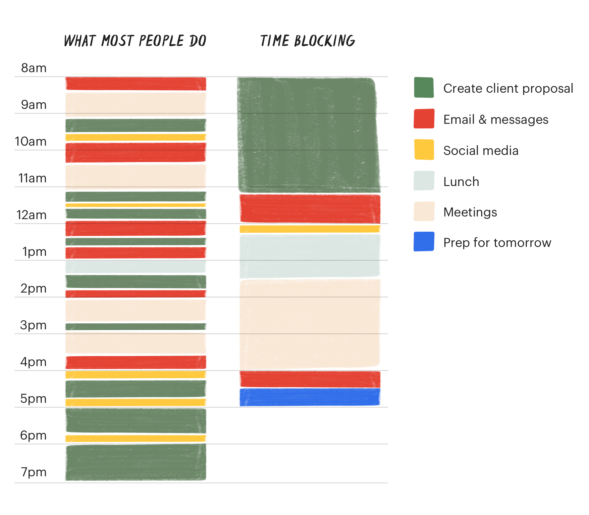

If you’re like me, your job provides some degree of autonomy with how you spend your time — it’s entirely up to you to set your schedule, keep a todo list, and decide what the priorities are and how best to accomplish the stated goals. You have, essentially, a sandbox that you work inside and it is up to you to devise a strategy for being productive.
Keep in mind that I’m a manager, and this system was mostly developed managing Ingenuity Studios, this won’t work for every job.
We all have to operate in 2 modes; a fast mode in which we want to be connected to what’s happening around us, to respond quickly, and to be available to help others solve their urgent problems; and a slow mode where we focus and think deeply about complex problems. In fast mode you need to leave your door open, email running, and notifications on. In slow mode you need all that to go away so you can think — what John Cleese calls “boundaries of space and time”. An important productivity skill is to efficiently switch between these 2 modes.
For a lot more on this idea, check out Daniel Kahneman’s Thinking Fast and Slow.
Too many people spend their entire careers trapped in fast mode. In fact, I think that the very structure of our jobs — the deadlines, the meetings, the rapid and continuous communication — increases the gravity of the fast mode to the point of being almost inescapable. It can feel irresponsible to switch off your email, decline meetings, and communicate less — but critical and creative thinking is best done in the slow mode, and is an important part of all of our jobs. That’s why I think the single most important thing you can do for your productivity is to master your schedule.
The only thing I’ve done that seems to work is called “time-blocking”. A quick google search will tell you everything you need to know about it, but it’s a very simple concept summed-up nicely in this graphic (from todoist):
It’s such a simple idea that it sounds silly, but powerful ideas often are so simple they’re silly at first glance. A lot of people think that they could not possibly make this work with their job, and unspoken feeling is often that it would be irresponsible to work this way. But I would argue that if you’re not in control of your time you’re not in control of your job.
The actual tools I use are pretty basic. I’ve gone down every productivity rabbit-hole you can imagine — I’ve used the GTD system, kept all my notes in wikis, used exotic Japanese paper notebooks (which I love), I’ve managed my entire schedule on paper… I’ve done it all. But the below is a simple, dependable, system that works for me (obviously, it is highly specific to me, my brain, and the job I have).
In general my attitude to productivity tools is “if you can’t make it work on paper it’s not a good system” but in this case I think the best tool is the reminders app on my phone. I always have my phone with me, the reminders pop-up on my lock-screen — it’s simple, obvious, and in your face, which is what you want from reminders.
I use reminders in 2 ways: first, for one-off reminders that simply guard against forgetting things or remind me to follow-up on them; second, for recurring reminders to check-in with people/things.
For everyone I want to keep in touch with, or everything I want to keep an eye on, I set a recurring reminder for myself (once a week, a month, a quarter). What I do in response to each reminder is different; for people I want to keep in touch with I simply send them a message, a photo, or question as a way of starting a conversation; for projects I might copy/paste a running set of notes to the team, or ask them for an update.
I’ve gone back and forth a million times but I think a single large sheet of paper is best. The critical thing is that everything on your todo list, for all your projects, is visible in a single glance. I’ve learned that I simply hate having to dig through hierarchies or apps/websites to figure out what I need to do. A sheet of paper is also nice because when it’s on your desk it never leaves your field of view, you can’t forget it.
I keep a logbook where I write a quick list of everything that I do each day. I was inspired to do this after reading Leveling Up by Peter Lyons and it has become an important way to communicate what I’m working on, reflect on how I’m using my time, and notice patterns.
For years I did this with a bullet journal type of notebook, I’ve used Apple Notes on my phone, and recently experimented with doing it in org mode. All have their advantages, I think it depends on how you spend each day and what tools you want to use (e.g. are you in front of a keyboard all day or are you in the field?).
For each person/team I have recurring meetings with I keep a separate note on my phone. I use these notes as agendas for our next meeting; every time I have an idea for something I want to bring up with them I’ll jot it down in their note. The notes all have a specific structure:
This one is the sleeper hit. Before I did this, whenever I took notes that I needed to bring up in some future meeting I always struggled with where to put them — they often got lost in my logbook and I always struggled to remember to bring them up. It is critical, as with the logbook to extract your personal todo items onto your todo list and not let them languish in these notes.
I’m a big believer that writing clarifies thinking. So an important part of my system is to transform the hunch, the noticed pattern, into a clearly-written memo share it with my boss or my team. Too many people simply talk about their problems. Don’t get be wrong, bouncing ideas off your teammates and peers is useful, but clearly articulating your thoughts in writing and having an outsider read it is the real test of clear thinking.
The process is roughly: work → notice → think critically → articulate in writing → share → revise. And then repeat this until you have a simple memo that persuasively describes the idea.
Which was the whole point of me writing this note.